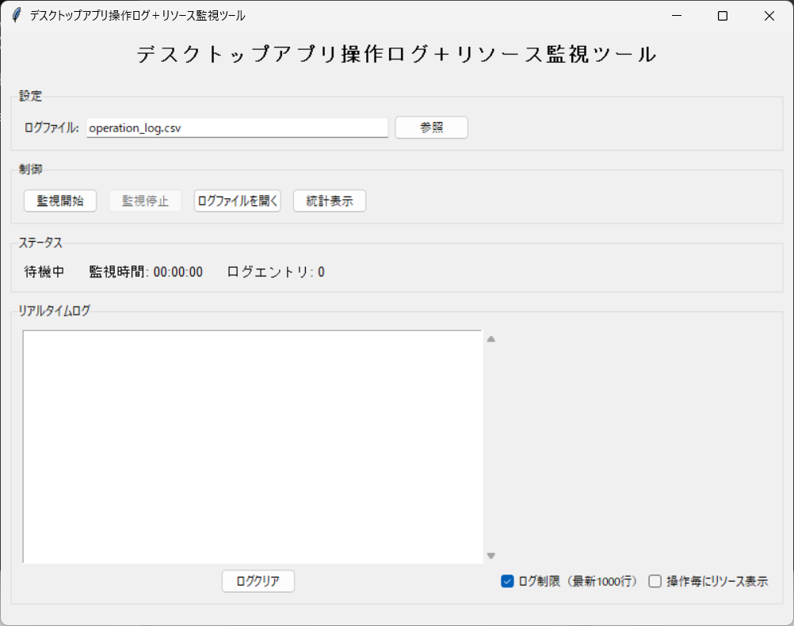

Operation Log Toolは、ユーザーの操作（マウスクリック、キーボード入力）とアクティブなアプリケーションのリソース使用状況（CPU使用率、メモリ使用量）を記録するPython製デスクトップアプリケーションです。
| パラメータ名 | 入力形式 | 必須/任意 | 説明 |
|---|---|---|---|
| 出力ファイル | ファイルパス | 任意 | ログを保存するCSVファイルのパス（デフォルト: operation_log.csv） |
| 監視間隔 | 数値（秒） | 任意 | リソース監視の間隔（デフォルト: 1.0秒） |
| イベントタイプ | 自動検出 | 自動 | 記録されるイベント: マウスクリック、キー入力、スクロール、監視 |
| ログレベル | 設定 | 任意 | 記録する詳細レベル（デフォルト: 全イベント） |